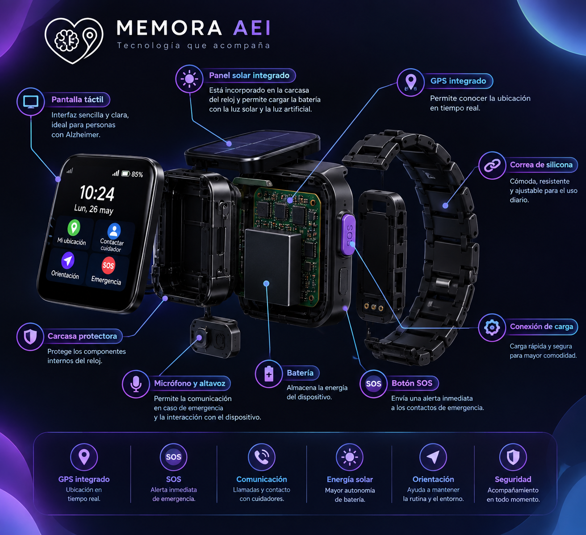

¿Qué queremos solucionar?
MEMORA AEI nace a partir de situaciones en las que la orientación, la ubicación y la comunicación pueden ser importantes.
Desorientación
Una interfaz sencilla busca ayudar al usuario a reconocer y acceder a funciones importantes.
Ubicación
La propuesta contempla una función de localización para apoyar al cuidador cuando sea necesario.
Emergencias
El botón SOS plantea una forma rápida y reconocible de solicitar ayuda.

Diseñado para acompañar.
MEMORA AEI propone un reloj inteligente pensado para integrar funciones de orientación, ubicación, comunicación y emergencia en un dispositivo de uso cotidiano.
Tecnología con propósito.
MEMORA AEI nace como una propuesta tecnológica enfocada en apoyar a las personas con Alzheimer y facilitar el acompañamiento por parte de sus familiares y cuidadores.
El objetivo es integrar diferentes funciones en un dispositivo de uso cotidiano, buscando que la tecnología sea sencilla, clara y útil.
Características
- Diseño pensado para uso diario
- Sistema de alerta SOS
- Tecnología de localización
- Función de contacto con cuidador
- Panel para aprovechar la luz
- Interfaz sencilla
Pensado para proteger
El concepto reúne diferentes funciones destinadas a facilitar el acompañamiento y aumentar la seguridad del usuario.
Ubicación GPS
El proyecto contempla tecnología de localización para facilitar la ubicación del usuario cuando sea necesario.
Botón SOS
Un botón de emergencia pensado para permitir que el usuario solicite ayuda rápidamente.
Contacto
Una función pensada para facilitar la comunicación entre el usuario y su cuidador.
El reloj, parte por parte
Una vista conceptual de los elementos que hacen parte de MEMORA AEI.

El reloj, función por función
Cada herramienta tiene un propósito dentro del concepto MEMORA AEI.
Mi ubicación — GPS
La función GPS está planteada para facilitar la localización del usuario. Desde el concepto del reloj, esta herramienta busca permitir que el cuidador pueda conocer la ubicación del dispositivo cuando sea necesario.
- Facilita la localización del usuario.
- Está pensada para apoyar al cuidador.
- Puede ser útil cuando el usuario se encuentra fuera de su entorno habitual.
- Se integra directamente en la interfaz del reloj.
SOS — Emergencia
El botón SOS está pensado para ofrecer una forma sencilla y rápida de solicitar ayuda. El usuario podría utilizarlo cuando se encuentre ante una situación que requiera atención.
- Botón de emergencia de fácil reconocimiento.
- Busca facilitar una solicitud rápida de ayuda.
- Está pensado para situaciones de emergencia.
- Su diseño prioriza que sea fácil de identificar dentro de la interfaz.
Contacto — Cuidador
La función de contacto está planteada para facilitar la comunicación entre la persona que utiliza el reloj y su cuidador o familiar.
- Facilita el acceso al contacto del cuidador.
- Busca reducir la cantidad de pasos necesarios para comunicarse.
- Está pensada para un uso sencillo.
- Puede ayudar a mantener una comunicación más directa con la persona responsable.
Orientación — Ayuda
La función de orientación busca ofrecer una interfaz clara que ayude al usuario a encontrar opciones importantes dentro del dispositivo.
- Interfaz sencilla y fácil de reconocer.
- Busca facilitar la navegación dentro del reloj.
- Permite acceder a funciones importantes desde la pantalla principal.
- Está pensada teniendo en cuenta la facilidad de uso.
La tecnología conecta a dos personas
El cuidador también forma parte del sistema.
La página muestra de manera conceptual cómo podría verse un panel para acompañar al usuario, consultar información y recibir una alerta.
Esta representación es visual y hace parte del concepto de MEMORA AEI.
¿Cómo funciona?
Las funciones principales están planteadas para ser sencillas de reconocer y utilizar.
Orientación
Una interfaz sencilla busca facilitar el uso cotidiano del dispositivo.
Ubicación
La función de ubicación está pensada para facilitar la localización.
Contacto
El concepto contempla comunicación con el cuidador.
Emergencia
El botón SOS permite plantear una solicitud rápida de ayuda.
Persona + cuidador
El propósito del proyecto es crear una conexión sencilla entre quien usa el reloj y quien lo acompaña.
Para la persona
- Orientación sencilla
- Botón SOS reconocible
- Acceso a funciones importantes
- Diseño pensado para el uso cotidiano
Para el cuidador
- Apoyo en la ubicación
- Contacto directo
- Recepción conceptual de alertas
- Acompañamiento a distancia
Botón SOS
El botón SOS está pensado para permitir que el usuario solicite ayuda rápidamente cuando se encuentre en una situación de emergencia.
Una idea pensada para acompañar.
El concepto incorpora un pequeño panel solar capaz de aprovechar la luz para contribuir a la alimentación del dispositivo.
Está planteado para aprovechar tanto la luz solar como la luz artificial.
Estamos para acompañar
MEMORA AEI es una propuesta tecnológica creada para brindar acompañamiento, orientación y seguridad a las personas con Alzheimer y sus familias.